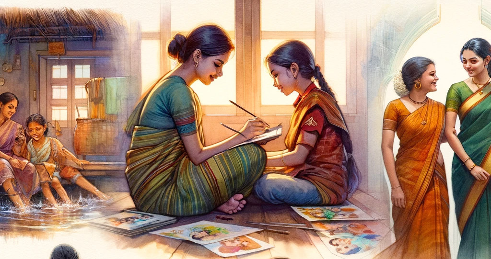
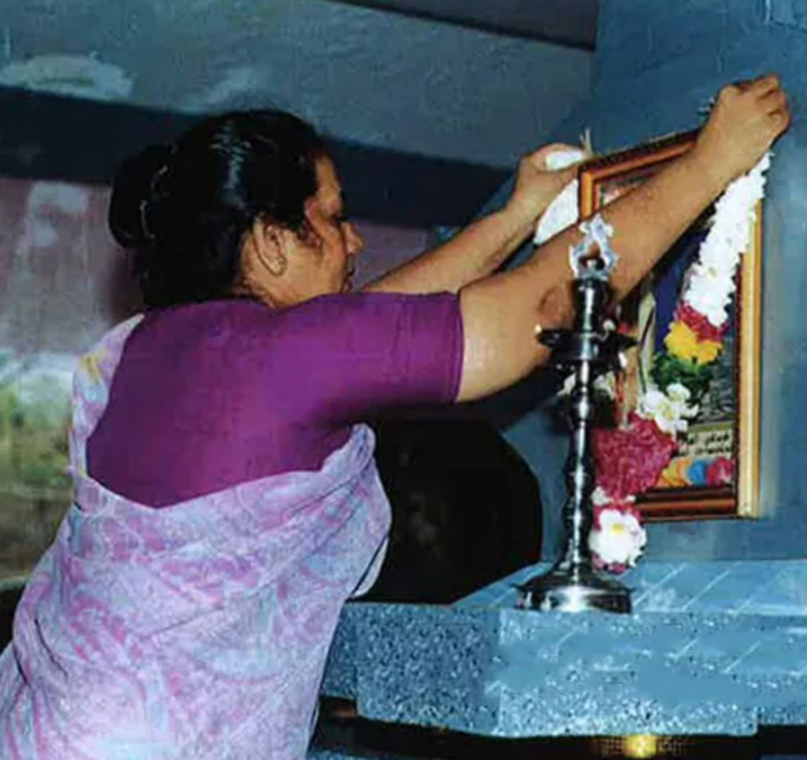
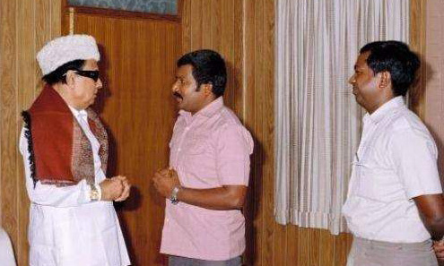
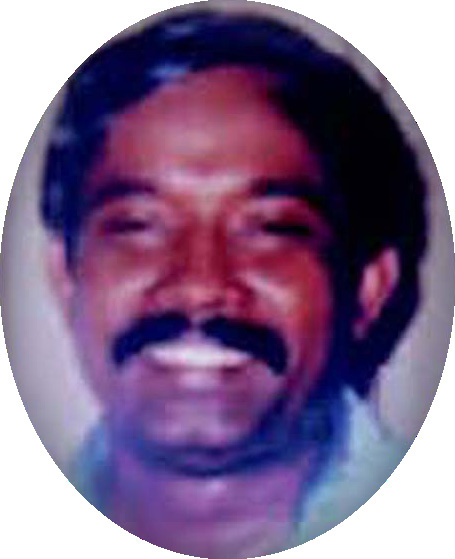
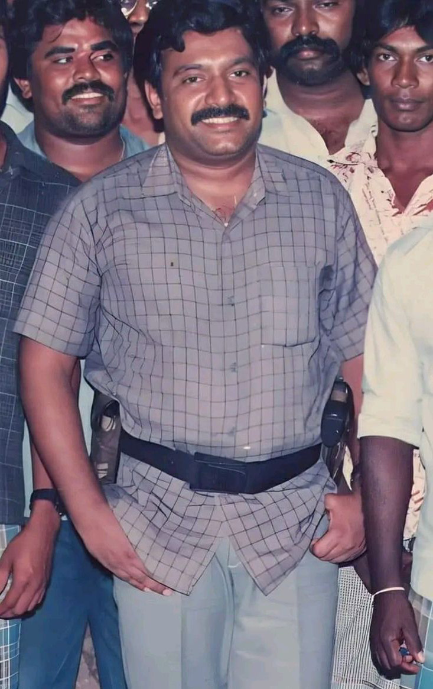
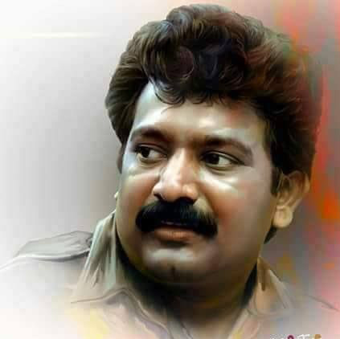
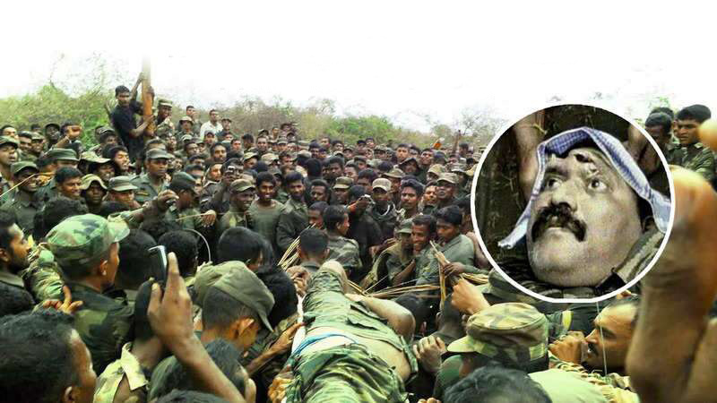

Kuha Akka's Daughter Speaks Out on Duwaraka's Tragic End
Kuha Akka's Daughter Speaks Out on Duwaraka's Tragic End
Jaffna Monitor hellojaffnamonitor@gmail.com 23 T he daughter of Captain Karan (Vaithilingam Manoharan) and Kuhaneswary has made a Facebook post that provides insights into the fate of Duwaraka. Captain Karan was one of the seventeen LTTE members who, in 1987, took their lives along with senior leaders Kumarappa and Pulendran. Karan's brother, Colonel Shankar, who later married Karan's widow Kuhaneswary in a union facilitated by the LTTE, was the architect of the organization's air and naval divisions. Kuhaneswary was respectfully referred to within the LTTE circle as Kuha Akka (elder sister). She was a close friend of Mathivathani, Prabhakaran's Kuha Akka's Daughter Speaks Out on Duwaraka's Tragic End Revealing the Untold: by: Our Special Correspondent Kuhaneswary, Also Known as Kuha Akka, Garlanded the Picture of Her Late Husband, Col. Shankar, in a Solemn Tribute to Commemo- rate His Passing in September 2021


Jaffna Monitor hellojaffnamonitor@gmail.com 24 wife. Interestingly, within the LTTE, commanders and fighters humorously referred to both as the "kitchen cabinet." Kuha Akka demonstrated her loyalty and commitment by refusing to leave the embattled Wanni and choosing to remain there instead. Being a close friend of Mathivathani Prabhakaran, Kuha reportedly promised to stay by the side of Prabhakaran's son, Charles Anthony, until the very end. Kuha Akka, along with Charles Anthony, were reported dead after the fighting concluded. Both Captain Karan and Colonel Shankar were related to the LTTE leader Prabhakaran. The 'Jaffna Monitor' has chosen not to disclose the name of Captain Karan's daughter, also Colonel Shankar's stepdaughter, citing concerns for her security and safety. Credible sources indicate that she attended school with Duwarka, where they developed a close friendship. Given security concerns, Duwarka was restricted in her social interactions, only allowed to mingle with a select few girls, among whom Karan's daughter was included. This unique bond places her as a critical living witness to the final stages of the conflict that shaped their lives. Her Facebook post has been widely shared, including by Raheem, a colorful figure in the LTTE's history, who was the spokesperson for the LTTE's regional commander in Jaffna, Kittu. This is her post: To those who keep asking if Duvaraga is gonna give the speech! The real one is no more! I saw her dead body and her mother's too! I spent a whole year in 2009 searching for the people. I am not going to share those images as I saw how my mother's dead body pictures were morphed into pornographic images. Very elaborative images - some army men insert their guns into her body! Even my worst enemy should not go through (seeing) such horror images of their mothers. I don't speak about those images much, as those images still haunt me! I DON'T HAVE THE ENERGY to see another mother's and sister's images circulated similarly. Hence, I am against those images coming out. I know if their dead body pictures come out, people can't misuse their names. I don't care how many families get fooled and give money. You all are 30+, and you should know Veluppillai Prabhakaran's children would never start a movement because they know if they do, then the people in Vanni will get tortured. And they would never ask for money like this! Common sense! Many called me selfish for saying that I can't see their images being morphed into pornographic images over people getting fooled. Yes, I am selfish because it is my family. We don't even hug or shake hands in Vanni, but I kiss her on her forehead whenever I see her. She is my baby sister and best friend. I will do everything in my capacity to not let those images come out! And I am tired of saying they are no more. It is so painful, even after 14 years. LTTE Supremo Prabhakaran and Col. Shankar in a 1984 Meeting with MGR, aka M.G. Ramachandran, Legendary Actor and Then Chief Minister of Tamil Nadu Kuha Akka Karan


Jaffna Monitor hellojaffnamonitor@gmail.com 25 T he disbelief among some Tamils regarding the de- mise of Prabhakaran has its roots in the post-2009 activities and stance of the LTTE's overseas branches and influential pro-LTTE factions in Tamil Nadu. These branches, financially robust and controlling a network of revenue-generating ventures and contribu- tions, faced a radical shift in purpose following the LTTE's military defeat. The overseas operations of the LTTE, once a mighty finan- cial pillar supporting their war efforts with Prabhakaran at its heart, found themselves in uncharted waters. The death of Prabhakaran ostensibly pulled the rug from under these opera- tions. The raison d'être for their fundraising and commercial enterprises seemed to disappear into thin air. Yet, in this vacuum of official mourning, a different narra- tive began to simmer. Despite Kumaran Pathmanathan or KP, the LTTE's chief arms procurer, declaring Prabhakaran's death in May 2009, a conspicuous absence of formal remem- brance by political parties sympathetic to Tamil rights or those aligning with Prabhakaran's ideologies left a palpable void. This silence around his death anniversa- ry did not go unnoticed. It became the fertile soil that sprouted the beguiling tale that Prabhakaran might still be alive. This omission, whether intentional or not, offered a glimmer of hope, or perhaps denial, that was skillfully exploited by those perpetuating the scam, resonating with segments of the Tamil community who yearned for a different truth. In the latter part of 2009, the over- seas operations of the LTTE faced a major quandary. The group, led by Perinbananayagam Sivaparan, known as "Nediyavan," in Norway, along with other key LTTE activ- ists, chose to deny Prabhakaran's death and promote the narrative that he was still alive. This stance was in direct opposition to Selva- rasah Pathmanathan, or KP, who initially announced Prabhakaran's survival but later acknowledged his demise and called for mourning. The Lingering Mystery of Prabhakaran's Fate OPINION


Jaffna Monitor hellojaffnamonitor@gmail.com 26 The denial of Prabhakaran's death by Nediyavan led to a rift within the LTTE's overseas factions, with KP and others who accepted Prabhakaran's death find- ing themselves increasingly isolated. KP's later arrest further consolidated Nediyavan's control. This lack of official acknowledgment from the LTTE's overseas branches meant that there was no formal commemoration for Prabhakaran or other high-rank- ing LTTE members killed in 2009. Annual observanc- es like "Maaveerar Naal '' (Great Heroes Day) didn't specifically acknowledge Prabhakaran and those killed in Mullivaikkal. In Tamil Nadu, despite initial claims of Prabhakaran's survival by some politicians, over time, many either changed their stance or remained silent, except for a few like Nedumaran, who steadfastly maintained that Prabhakaran was alive. The enduring enigma surrounding the fate of Prab- hakaran is further compounded by the organization's historical propaganda machine and the perceptions held by his supporters. Over the years, the LTTE meticulously cultivated an image of Prabhakaran as an invincible, almost superhuman figure. This portrayal was reinforced through numerous songs and narra- tives that glorified him. Such propaganda played a significant role in shaping the belief among his follow- ers that Prabhakaran was beyond defeat and death. This belief was further bolstered by past instances where both the Sri Lankan and Indian governments prematurely declared Prabhakaran dead, only for him to resurface, alive and active. These occurrences reinforced the myth among a few of his followers and sympathizers that Prabhakaran was somehow immune to death. This backdrop of historical misinformation and the perceived invulnerability of Prabhakaran has been a crucial factor in sustaining the belief among certain sections of the LTTE and its supporters that he could still be alive despite official confirmations of his death. Amidst this, various factions and groups claiming to represent the official overseas LTTE emerged, each trying to influence Tamil politics in Sri Lanka and Tamil Nadu. Some overseas elements also report- edly financed and encouraged violent attempts in Sri Lanka, although most were thwarted. This complex situation led to a fragmented and weak- ened overseas LTTE, with individual countries or cities' LTTE elements operating autonomously. The properties and businesses previously under LTTE con- trol were often appropriated by those in whose names they were registered. Meanwhile, the pro-Tiger world remained divided over Prabhakaran's fate, leading to a range of speculative claims and rumors about his survival and whereabouts. Triumphant Sri Lankan Army Soldiers Carrying the Lifeless Body of LTTE Chief Prabhakaran
